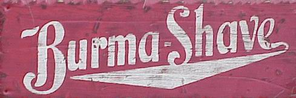

The Legend-News
What We Got Here
- C.W. Sightings: He’s everywhere! He’s everywhere!
- Bad News: All our times have come; Here, but now they’re gone.
- Old Home Café: “By the side / of the road”
- Previously, in The Legend-News: An interview with C.W. McCall.
- Song A’ Th’ Month: “The Silverton”
C.W. Sightings
Ah, the month of May! The trees are leafy, the flowers bloom, and the Silverton train rides again! This past weekend, the Durango & Silverton Narrow Gauge Railroad took its first run of the year all the way up to Silverton. And musical artists who were inspired by C.W. McCall are all around.
“Service to Silverton: All aboard!” The Durango Herald, 2012 May 4.
“C.W. McCall celebrates local train, talks about his road to music success”. The Durango Herald, 2012 May 5.
“Whistle calls in summer” The Durango Herald, 2012 May 6.
“EDMONTON RADIO: Garner Andrews, morning man of mystery” Gig City, 2012 April 16.
Remember Colt Ford? He recorded a cover of “Convoy” back in 2010, on his album Chicken and Biscuits. “Can Twang And Swag Get Along?” Fredericksburg.com, 2012 April 12.
“5 questions: Webb Wilder” Connect Savannah, 2012 April 24.
Jef Mallett’s comic strip Frazz referenced C.W. McCall in Sunday’s strip.
Bloomfield to Baghdad, the latest novel from Tom Claffey.
American Spirit and The Real McCall: An American Storyteller, a two-album bundle from American Gramaphone.
Alan Chafin is selling books from his personal library.
The latest review on The Thinking Chick’s Guide: Brokedown Palace (1999).
Bad News
Some notable (to me, anyway) departures.
George Lindsey, best known as “Goober Pyle” on The Andy Griffith Show, Mayberry R.F.D., and Hee Haw, died on May 6.
Charles “Skip” Pitts, on May 1. He created that “wah-wah” guitar intro to Isaac Hayes’ “Theme from Shaft”
Joel Goldsmith, composer of the music for Stargate SG-1 and Stargate Atlantis, on April 26.
Levon Helm of The Band, on April 19.
Dick Clark, on April 18. If you’ve got to ask “who?”, you are not of this world.
Old Home Café
“By the side / of the road”
Behind the Old Home Café, ’way back at the far end, there’s a big red barn. Of course it’s red; everyone knows that red is the only color for a barn.
For a barn, it’s in pretty good shape. No broken boards; the doors slide open easily; and the roof is intact. The interior was fairly clean, if a bit dusty. Except for maybe the occasional fox or squirrel, or the birds that somehow managed to get inside, no animals have been housed in this barn for about twenty years.
The barn isn’t empty, though: sitting inside, up on blocks, with tarps on top, there’s a ’57 Chevy pickup, a ’49 Peterbilt truck, and a ’75 Jeep® CJ-5 (the last year with the good Dana drivetrain). None of them were in running condition, and their seat upholstery was a bit holey; but a few weeks of effort — maybe months, in the case of that Pete — and they’d be up and running again.
Jon was pushing past the cobwebs in the loft, where there was a lot of old lumber and one bale of hay that was clearly past its expiration date. He was looking for something that Bob Rainey said was in here: a set of old Burma-Shave® signs. Jon remembered seeing a few of those signs out in the wild, before most of them were removed in some sort of road beautification movement of the 1970s: a couple of occurences in South Dakota, about thirty years ago, during a family trip to the Badlands. And lately, as he had driven through Ogden, Iowa on his way west to his fateful encounter with Bob Rainey, the Old Home Café, and Avis, although the signs in Ogden were new metal recreations of the original wooden ones.
Considering what was stacked up here in the loft, Jon estimated that there was enough lumber to build a large shed or a really small house. Two-by-four boards, two-by-eights, four-by-four posts, and a couple of giant beams that might have come from another barn. All interesting, but just not what he was looking for.
Then Jon spotted the signs, propped up on one end again the side wall. There were six boards. Their edges were worn, and the paint was faded and chipped; the topmost board said “Your head grows bald”. He picked up the boards and separated them, wanting to figure out the jingle — which didn’t take long.
He laid the boards on the floor of the loft, arranged in order:
WITHIN THIS VALE
OF TOIL
AND SIN
YOUR HEAD GROWS BALD
BUT NOT YOUR CHIN

Jon smiled. This was exactly what he wanted. These signs, mounted on those four-by-four posts, and he’d have a nice-looking border on the side patio of the Café.
Previously, in The Legend-News
From the 2003 March 3 issue of The Legend-News.
An Interview With C.W. McCall (Part One)
The Legend-News recently sat down with a fully-loaded iPod and a fully-charged PowerBook, and got this exclusive interview with country music legend C.W. McCall.
Legend-News: You're best known for the trucker anthem, “Convoy”. But C.W., what can you tell us about your early life? What inspired you to write your songs?
C.W. McCall: Well, I was born in a town called Audubon.
LN: Southwest Iowa?
CW: Right where it oughta been.
LN: Please describe your parents.
CW: My daddy was a music-lovin’ man, stood six-foot-seven, had big ol’ hands. He lost two fingers in a chainsaw, but he could still play the violin.
LN: What your mother also musically inclined?
CW: Mom played piano; just the keys in the middle.
LN: What sort of music did you listen to when you were growing up?
CW: I was raised on Dust Bowl tunes. Woody Guthrie, Delta blues, the Carter family.
LN: Did you listen to a lot of radio?
CW: Well, I listened to Nashville and Tulsa and Dallas, and Oklahoma City gave my ears a callus.
LN: So that was your inspiration? Early country and western, Bill Monroe bluegrass?
CW: Mostly. But the place I remember, on the edge of town, was the place where you really got the hard-core sound. The place where the truckers used to stop on their way to Des Moines.
LN: The Old Home Café.
CW: Yeah. Them truckers never talked about nothing’ but haulin’, and they was always complainin’ about their livers and backs. But they was fast-livin’, strung-out, truck-drivin’ son of a guns.
LN: So you decided, back in ’72, to write about a truck driver.
CW: I never forgot that lesson of pickin’ and singin’, the country way. Yeah, them walkin’, talkin’ truck stop blues came back ta life.
Next Issue: Travelling across America.
Song A’ Th’ Month
The Silverton
(C.W. McCall, Bill Fries, Chip Davis)
She was born one mornin’ on a San Juan summer
Back in eighteen and eighty and one
She was a beautiful daughter of the D and R G
And she weighed about a thousand ton
Well, it’s a-forty-five mile through the Animas canyon
So they set her on the narra gauge
She drank a whole lot a’ water
And she ate a lot of coal
And they called her the Silverton (Silverton train)
[Chorus]
Here comes the Silverton, up from Durango
Here comes the Silverton, a-shovelin’ coal
Here comes the Silverton, up from the canyon
See the smoke and hear the whistle blow
Well, now listen to the whistle in the Rock Wood cut
On the high line to Silverton town
And you’re gonna get a shiver
When you check out the river
Which is four hundred feet
straight down
Take on some water at the Needleton tank
And then a-struggle up a two-five grade
And by the time you get your hide
Past the Snowshed slide
You’ve had a ride on the Silverton (Silverton train)
[Chorus]
Here comes the Silverton, up from Durango
Here comes the Silverton, a-shovelin’ coal
Here comes the Silverton, up from the canyon
See the smoke and hear the whistle blow
[Bridge]
[Chorus]
Here comes the Silverton, up from Durango
Here comes the Silverton, a-shovelin’ coal
Here comes the Silverton, up from the canyon
See the smoke and hear the whistle blow
Now, down by the station, early in the mornin’
There’s a whole lot a’ people in line
And they all got a ticket
On The Train To Yesterday
And it’s a-gonna leave
on time
Well, it’s a forty-five mile up the Animas canyon
So they run her on the narra gauge
She takes a whole lot a’ water
And she needs a lot of coal
And they call her the Silverton (Silverton train)
[Chorus]
Here comes the Silverton, up from Durango
Here comes the Silverton, a-shovelin’ coal
Here comes the Silverton, up from the canyon
See the smoke and hear the whistle blow
[Fade out]
Here comes the Silverton, up from Durango
Here comes the Silverton, a-shovelin’ coal
Here comes the Silverton, up from the canyon
See the smoke and hear the whistle blow
Here comes the Silverton, up from Durango
Here comes the Silverton, a-shovelin’ coal
Here comes the Silverton, up from the canyon
See the smoke and hear the whistle blow
“The Silverton” can be found on the albums C.W. McCall’s Greatest Hits and The Best of C.W. McCall.
Next Issue: Was the light of the moon, on the fourth of June. Okay, two days early and the wrong moon phase, but you know what’s coming: Convoy Day!
The Legend-News
is published monthly by TechRen Enterprises, your pink and plastic buddy. Copyright 2012 TechRen Enterprises. Send subscription requests, unsubscribe demands, complaints, kudos, suggestions, news and other contributions to
Legend-News@cw-mccall.com.
Almost everything in
The Legend-News
has been written by Ed. Floden, except for the stuff that he blames on someone else.
“The Batmobile doesn’t have so many buttons!
”